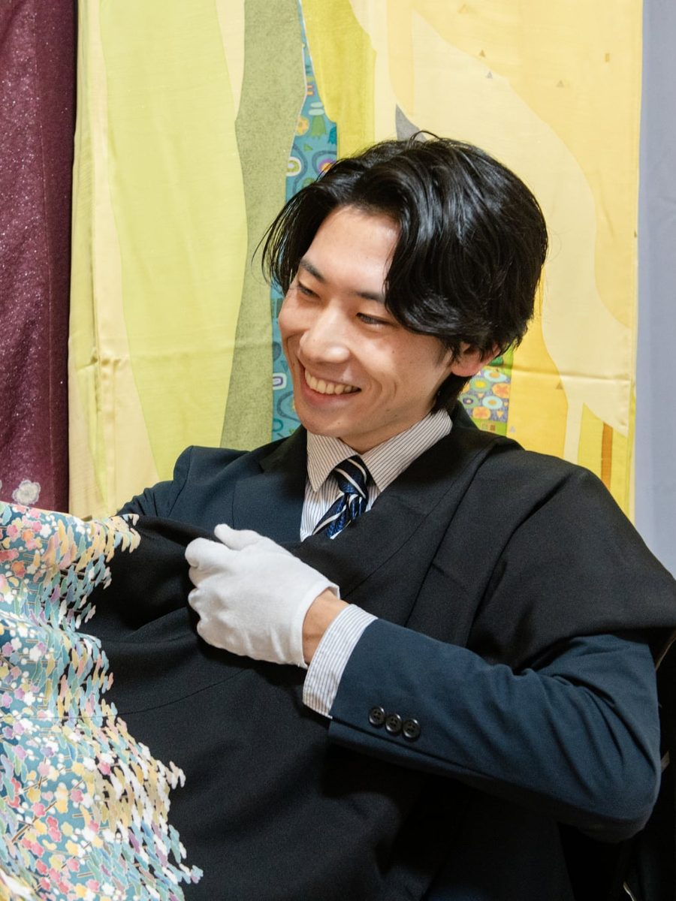
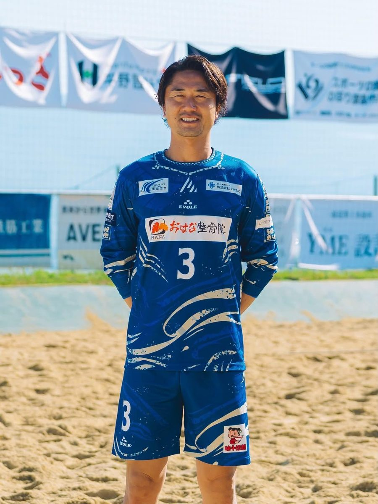
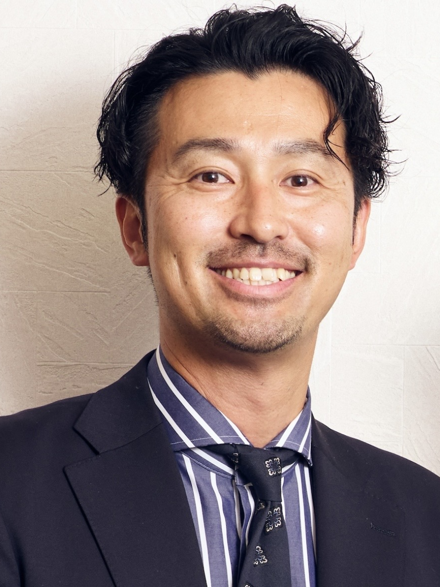
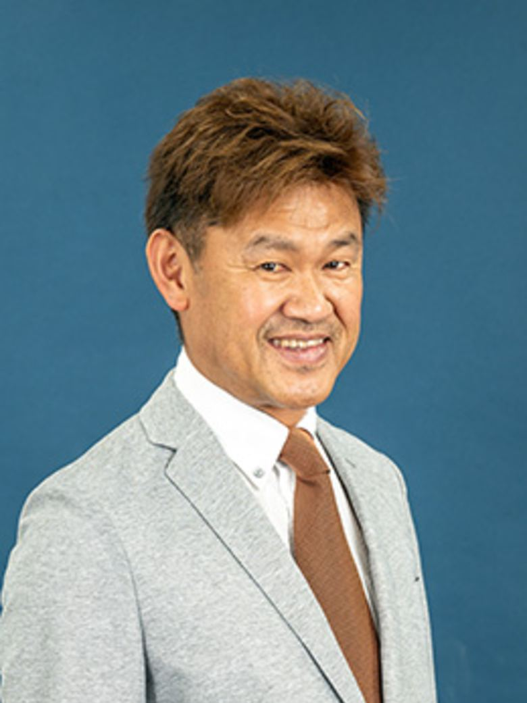
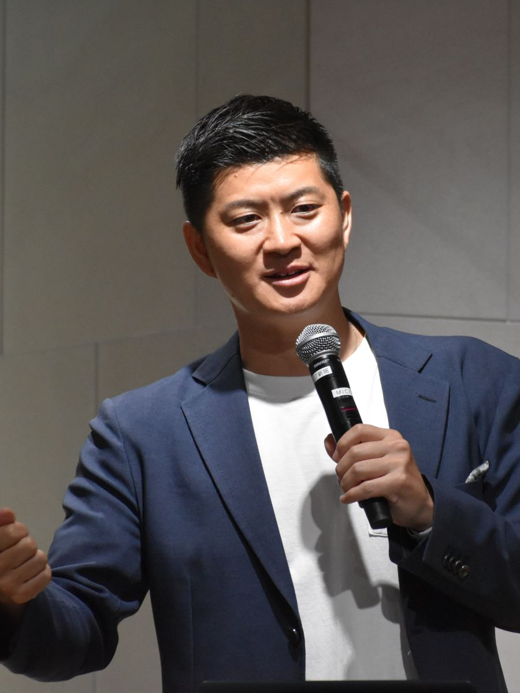

アスリートとスポンサーが共創するコミュニティ「Athlifes」。オーナー・監督・選手を兼ねる青沼広己さんが、好きなものだけで価値をつくるまで。
大工から歯学部へ、51歳で開業した武井新吾さん。兵庫県尼崎市の子ども専門クリニックが見据える、歯を守るということ。
税理士法人から独立し、LINE公式アカウント支援で法人化した軍司敦哉さん。吹奏楽の指揮者経験を仙台発のマーケティング支援に注ぐまで。
1都3県で出張買取を手がける、29歳経営者・渡邊真大さん。50万円を溶かした失敗から掴んだ、リユース業界の勝ち筋。

1947年創業、来年80年を迎える気仙沼「御菓子司いさみや」。3代目・畠山憲之さんが守ろうとしているもの。

VOL.012 スポーツウェア製造業
VOL.009 キャリア支援
VOL.004 スポーツ施設施工
VOL.003 国際人材育成この記事は、私たちが企業と
向き合う姿勢そのものです。